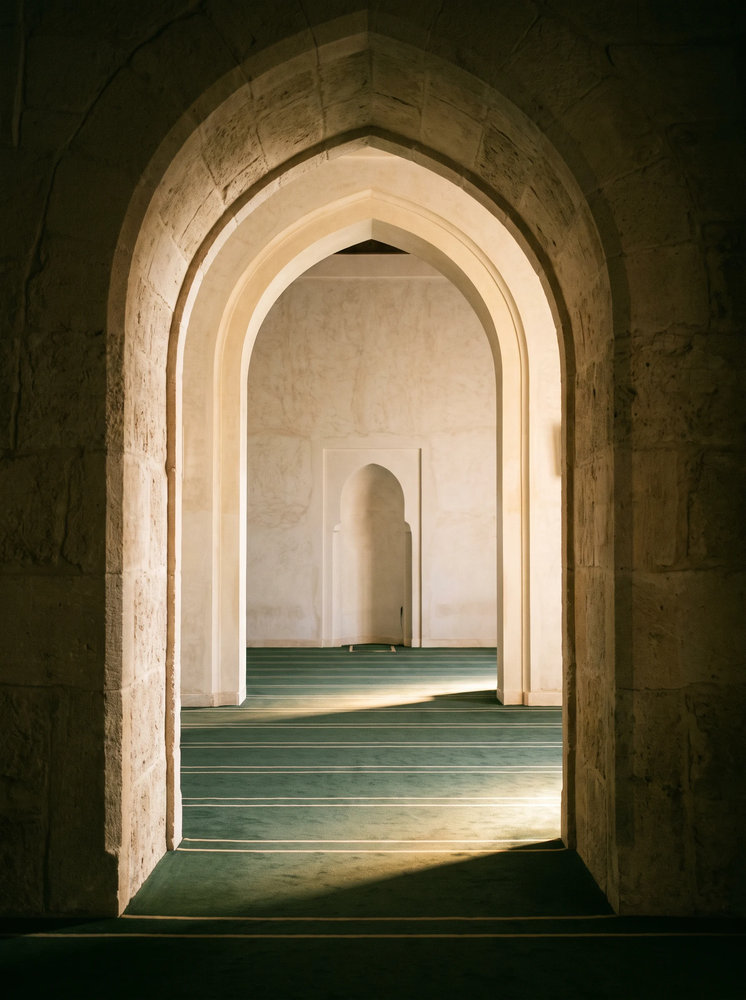
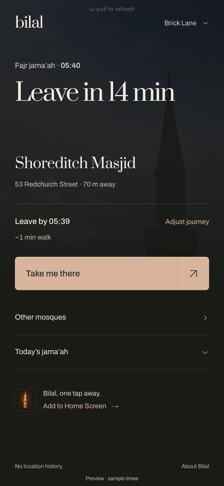
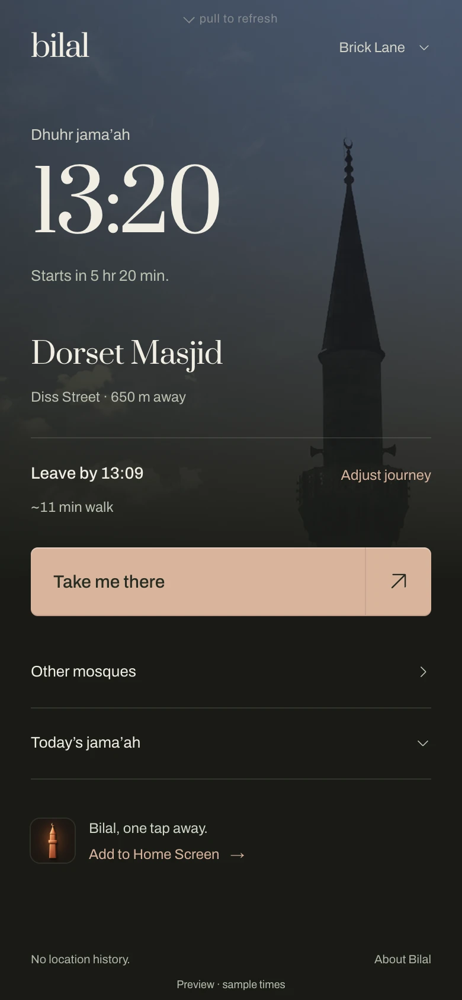
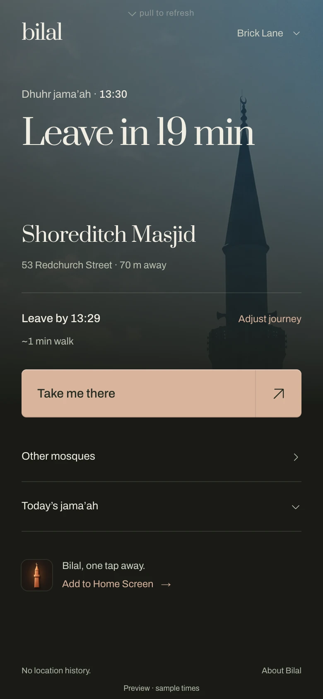
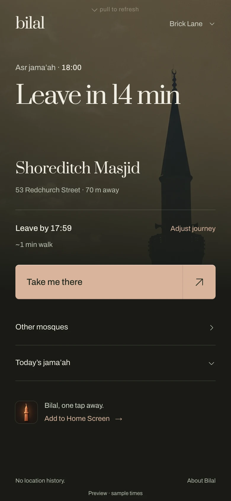
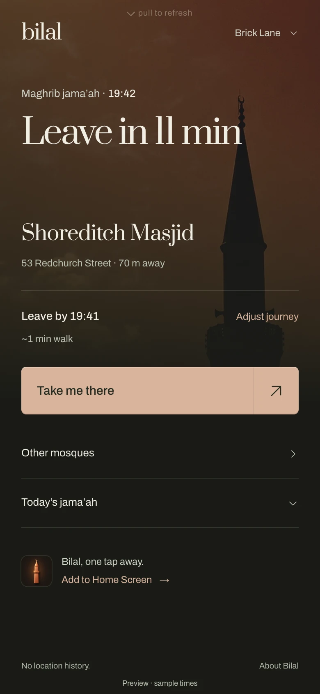
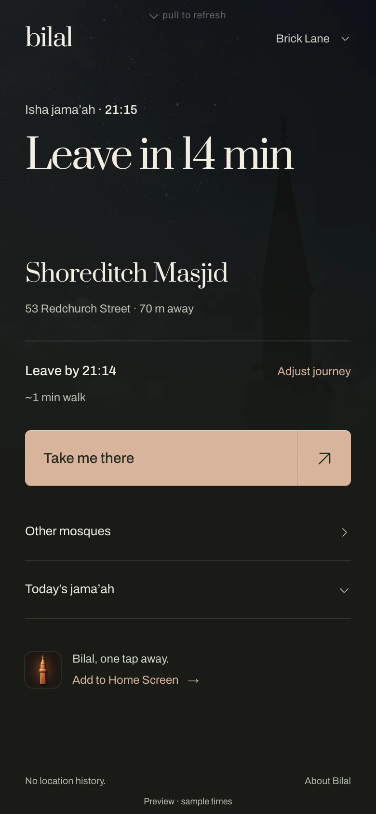
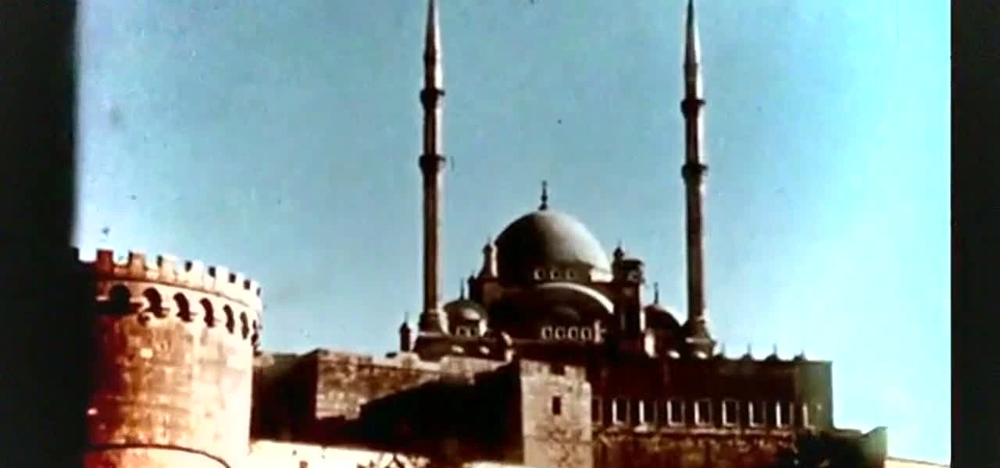

There’s a placefor you inthe jama’ah.
Find jama’ah times at mosques near you.
Know when to go, and how to get there.
Bilal Near. Free, with no account needed.

Your next jama’ah.
Right here.
The mosque’s time. The way there.
Another jama’ah nearby if you need it.
From the quiet of Fajr to the last prayer of the night, Near moves with your day.
Try Bilal Near





Actual Near screens. Illustrative times.
Your masjid belongs here, too.
Send its name and website. If it publishes prayer times, we’ll try to add it within 24 hours. Leave your email to hear when it’s ready.
Request your mosque
Best with sound on.
On your TV.
On your smart screen.
Our vision is to make the call to jama’ah part of everyday life, on the screens around us.
Bilal for TVs and smart screens is still an experiment. Try it on an Echo Show, Fire TV or another screen, and help us get it right.
Share your feedback
Set up your screenExperimental +
Ask Alexa for the browser. Bilal does the rest.
- Say “Alexa, open Silk browser.”
- Open bilalathan.co.uk. The display will show a QR code.
- Scan it with your phone, choose your mosque and enter your journey. Tap once on the Show to allow the athan.
Why we recommend it: it is already a room-scale screen with a speaker and touchscreen. Bilal keeps the page awake when Silk would normally close it.
Install the small TV app once.
- Get Downloader from your TV's app store and open it. If asked, allow Downloader to install apps.
- Enter bilalathan.co.uk/bilal.apk, then install and open Bilal.
- Scan the QR code with your phone and choose your mosque and journey. The app arms sound itself.
The app is the dependable TV route: it stays awake, starts again after a power cut and needs no extra tap for sound. Fire TV Stick 4K Select and the 2026 Fire TV Stick HD run Vega OS, so use the Silk browser route under “Something else” instead.
Four more ways to put Bilal in a room.
Each works. Open only the screen you are considering, and we will tell you the honest tradeoff.
A laptop or desktop
Open bilalathan.co.uk/?display=1, choose your mosque from the link on screen, then press F for fullscreen.
Good for: hearing Bilal work in the next few minutes. Computers sleep, so it is not the most dependable room screen.
Fire TV in the Silk browser
Open Silk, go to bilalathan.co.uk, scan the QR code, then set Settings → Display & Sounds → Screensaver → Never.
Good for: Vega OS Fire TV sticks that cannot install the app. Amazon also hides a second sleep timer, so test it before relying on it.
A spare phone or tablet
Open bilalathan.co.uk/?display=1, scan its code with your main phone, then leave the device on charge where you will pass it.
Good for: the cheapest second room. The ?display=1 is what tells a phone to become the display.
A smart TV browser
Open the TV's browser, go to bilalathan.co.uk and follow the QR setup.
Good for: Samsung, LG and other TVs with a browser. Whether the page stays awake depends on the model, so give it ten minutes before trusting it.